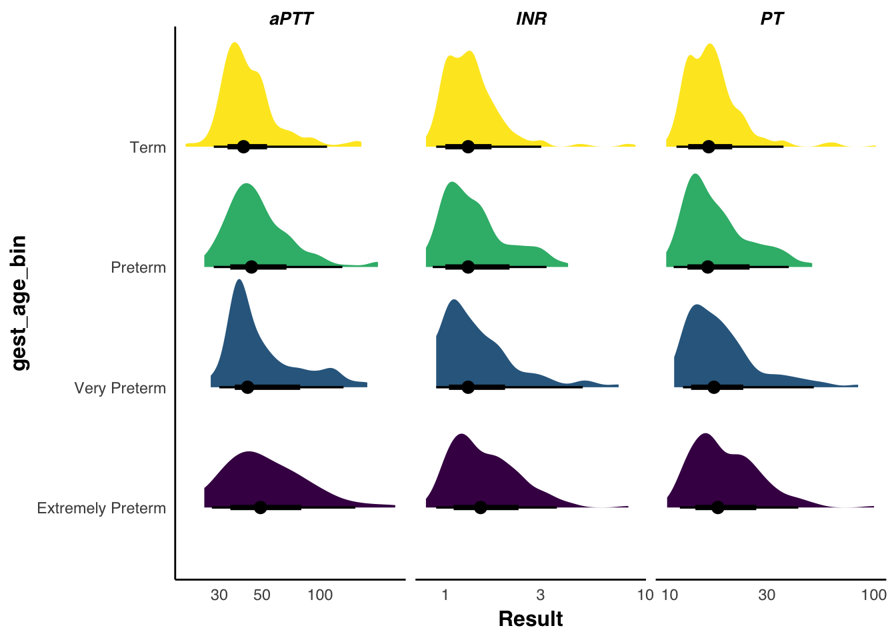
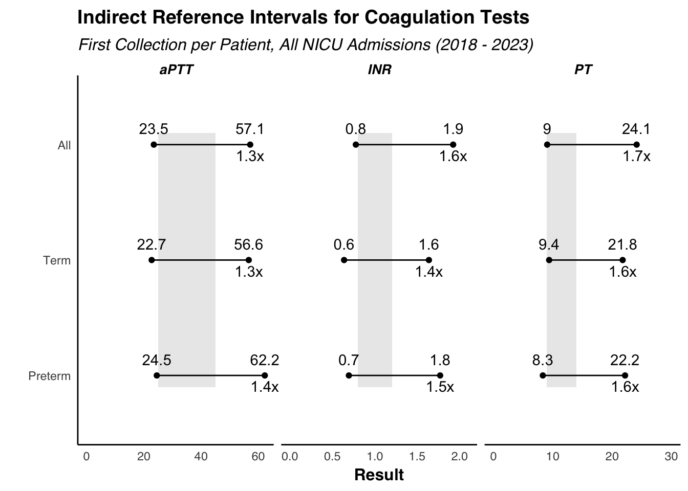

library(tidyverse)
theme_ns <- theme(text = element_text(family = "Helvetica"),
title = element_text(size = 14, margin = margin(0, 0, 8, 0)),
plot.subtitle = element_text(size = 12, face = "italic", hjust = 0),
plot.title = element_text(hjust = 0, face = "bold"),
axis.title = element_text(size = 12, face = "bold", margin = margin(4,4,4,4)),
axis.title.x.bottom = element_text(face = "bold", margin = margin(4,0,0,0)),
axis.title.y.left = element_text(face = "bold", margin = margin(0,4,0,0)),
legend.title = element_text(face = "bold.italic", size = 12),
axis.line = element_line(),
axis.ticks = element_blank(),
panel.grid = element_blank(),
panel.background = element_blank(),
strip.text = element_text(size = 10, face = "bold.italic"),
strip.background = element_blank())
theme_set(theme_ns)
coag_data_raw <- readxl::read_xlsx("~/git/nicu_data/data/coags_in_neonates_report.xlsx")
coag_data <-
coag_data_raw |>
mutate(PT = str_match(`Last Lab Results`, "PT: (.*?) sec")[,2],
INR = str_match(`Last Lab Results`, "INR: (.*)")[,2],
aPTT = str_match(`Last Lab Results`, "aPTT: (.*?) sec")[,2],
gest_age = as.numeric(`Gest Age`),
gest_age_term = factor(gest_age >= 37, labels = c("Term", "Preterm")),
gest_age_bin = factor(case_when(gest_age < 28 ~ "Extremely Preterm",
gest_age >= 28 & gest_age < 32 ~ "Very Preterm",
gest_age >= 32 & gest_age < 37 ~ "Preterm",
gest_age >= 37 ~ "Term"),
levels = c("Extremely Preterm", "Very Preterm", "Preterm", "Term"),
ordered = T),
birth_weight = as.numeric(`Pediatric Birth Wgt`),
birth_weight_grams = birth_weight * 28.3495,
birth_weight_bin = factor(case_when(birth_weight_grams < 1500 ~ "Very Low",
birth_weight_grams >= 1500 & birth_weight_grams < 2500 ~ "Low",
birth_weight_grams >= 2500 & birth_weight_grams < 4000 ~ "Normal",
birth_weight_grams >= 4000 ~ "High",
T ~ NA),
levels = c("Very Low", "Low", "Normal", "High"),
ordered = T))
first_coags <-
coag_data |>
arrange(`Collection Date`, `Collection Time`) |>
group_by(MRN) |>
fill(c("PT", "aPTT", "INR"), .direction = "downup") |>
mutate(across(c("PT", "aPTT", "INR"), ~as.numeric(str_replace_all(.x, ">|<", "")))) |>
distinct() |>
slice_head(n = 1) |>
ungroup()
gg_input <-
first_coags |>
select(MRN, PT, INR, aPTT, matches("gest_age|birth_weight")) |>
pivot_longer(c(PT, INR, aPTT), names_to = "Test", values_to = "Result")Coag Profiles in Neonates
Distribution of Coagulation Results by Gestational Age
Table
library(gtsummary)
library(gt)
first_coags |>
tbl_summary(by = "gest_age_bin", missing = "no", include = c("gest_age_bin", "PT", "INR", "aPTT"), statistic = everything() ~ "{mean}") |>
add_n() |>
add_p() |>
add_ci(pattern = "{stat} ({ci})") |>
bold_labels() |>
bold_p() |>
modify_header(all_stat_cols() ~ "**{level}**<br>*N = {n}*")| Characteristic | N | Extremely Preterm N = 1601,2 |
Very Preterm N = 901,2 |
Preterm N = 1781,2 |
Term N = 3191,2 |
p-value3 |
|---|---|---|---|---|---|---|
| PT | 744 | 20 (19, 22) | 20 (17, 22) | 18 (17, 19) | 17 (16, 18) | <0.001 |
| INR | 744 | 1.71 (1.6, 1.8) | 1.66 (1.4, 1.9) | 1.52 (1.4, 1.6) | 1.46 (1.4, 1.6) | <0.001 |
| aPTT | 536 | 60 (53, 67) | 56 (48, 64) | 53 (48, 58) | 46 (43, 49) | <0.001 |
| 1 Mean | ||||||
| 2 CI = Confidence Interval | ||||||
| 3 Kruskal-Wallis rank sum test | ||||||
Figure
library(ggdist)
gg_input |>
drop_na(gest_age_bin) |>
ggplot(aes(Result, gest_age_bin, fill = gest_age_bin)) +
stat_slabinterval(na.rm = T) +
scale_x_log10() +
facet_wrap(~Test, scales = "free_x") +
theme(legend.position = "none")
Calculating Reference Ranges From Real-World Data
library(refineR)
nested_data <- gg_input |> group_by(gest_age_term, Test) |> nest() |> drop_na() |> bind_rows(gg_input |> mutate(gest_age_term = "All") |> nest(.by = c(gest_age_term, Test))) |> mutate(gest_age_term = factor(gest_age_term, levels = c("Preterm", "Term", "All")))
nested_data$ri_obj <- map(nested_data$data, ~refineR::findRI(.x[["Result"]]))
nested_data$ri <- map(nested_data$ri_obj, ~getRI(.x))
nested_data$lower_limit <- nested_data$ri |> map(2) |> map(1) |> unlist()
nested_data$upper_limit <- nested_data$ri |> map(2) |> map(2) |> unlist()
current_ri <- tibble(Test = c("PT", "INR", "aPTT"), lower_limit_ri = c(9.0, 0.8, 25), upper_limit_ri = c(14, 1.2, 45))Indirect Reference Interval Figure
gg_ri_input <-
nested_data |>
select(Test, gest_age_term, lower_limit, upper_limit) |>
pivot_longer(c("lower_limit", "upper_limit"), names_to = "Limit", values_to = "Value") |>
left_join(current_ri) |>
mutate(times_url = ifelse(Limit == "upper_limit", Value / upper_limit_ri, NA))Joining with `by = join_by(Test)`scales <- tibble(Test = rep(c("PT", "INR", "aPTT"), each = 2), gest_age_term = "All", Value = c(0, 30, 0, 2.1, 0, 60))
ggplot(gg_ri_input, aes(x = Value, y = gest_age_term)) +
geom_point() +
geom_text(aes(label = round(Value, digits = 1)), vjust = -1) +
geom_text(data = gg_ri_input |> filter(Limit == "upper_limit"), aes(label = paste0(round(times_url, digits = 1), "x")), vjust = 1.5) +
geom_segment(data = nested_data, aes(x = lower_limit, xend = upper_limit, y = gest_age_term, yend = gest_age_term)) +
geom_rect(data = current_ri, aes(xmin = lower_limit_ri, xmax = upper_limit_ri, ymin = 0.9, ymax = 3.1), fill = "black", alpha = 0.1, inherit.aes = F) +
geom_blank(data = scales) +
facet_wrap(~ Test, scales = "free_x") +
coord_cartesian(clip = "off") +
xlab("Result") + ylab("") + ggtitle("Indirect Reference Intervals for Coagulation Tests", subtitle = "First Collection per Patient, All NICU Admissions (2018 - 2023)") +
theme()
Multivariate Modeling
inr_model <- glm(INR ~ gest_age + birth_weight_grams, data = first_coags)
pt_model <- glm(PT ~ gest_age + birth_weight_grams, data = first_coags)
aptt_model <- glm(aPTT ~ gest_age + birth_weight_grams, data = first_coags)
tbl_merge(list(
tbl_regression(inr_model) |> bold_p(),
tbl_regression(pt_model) |> bold_p(),
tbl_regression(aptt_model) |> bold_p()),
tab_spanner = c("***INR***", "***PT***", "***aPTT***")) |>
as_gt() |>
tab_header(
title = md("Multivariate Modeling of Coagulation Assays"),
subtitle = md("First Collection per Patient, All NICU Admissions (2018 - 2023)")
)| Multivariate Modeling of Coagulation Assays | |||||||||
| First Collection per Patient, All NICU Admissions (2018 - 2023) | |||||||||
| Characteristic | INR | PT | aPTT | ||||||
|---|---|---|---|---|---|---|---|---|---|
| Beta | 95% CI1 | p-value | Beta | 95% CI1 | p-value | Beta | 95% CI1 | p-value | |
| gest_age | -0.03 | -0.06, 0.00 | 0.025 | -0.32 | -0.61, -0.03 | 0.033 | -1.3 | -2.3, -0.25 | 0.015 |
| birth_weight_grams | 0.00 | 0.00, 0.00 | 0.4 | 0.00 | 0.00, 0.00 | 0.5 | 0.00 | 0.00, 0.01 | 0.7 |
| 1 CI = Confidence Interval | |||||||||
tbl_regression(inr_model, exponentiate = T)